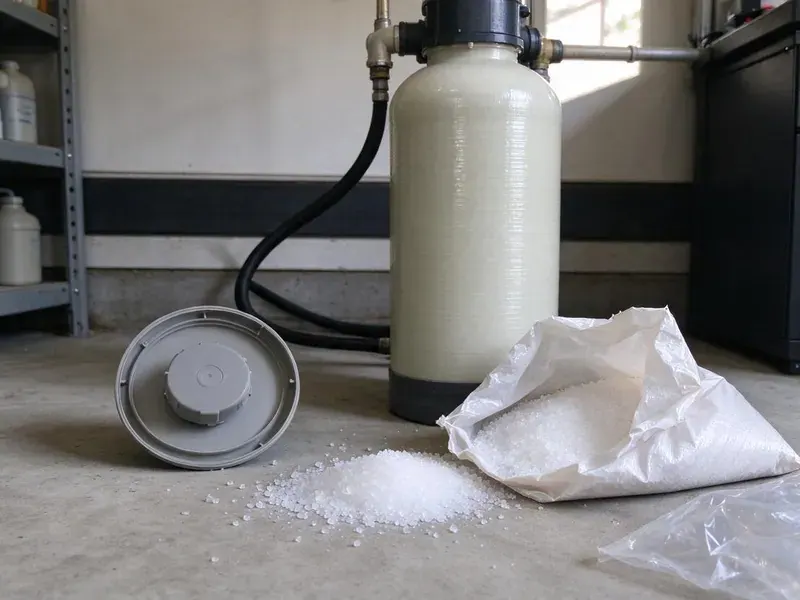

Flood Restoration in Las Vegas, NM
GVK Plumbing cleans and dries flooded homes in Las Vegas, NM, disinfecting everything the flood reached.
- Thorough Drying & Repair
- Rapid Flood Water Removal
- Truck-Mounted Extraction
- Nights and Weekends

Get Flood Water Out of Your Las Vegas, NM Home Today.
Every hour flood water sits, more drywall and flooring has to come out. Call and we will send a crew.
Flood Restoration in Las Vegas, NM From Pump-Out to Rebuild
GVK Plumbing uses submersible pumps and truck-mounted extractors to get flood water out fast in Las Vegas, NM. Speed matters most here. Every hour the water sits, drywall wicks it higher and subfloor soaks it deeper, which means more material that has to be cut out and replaced.
Some of what we do:
- Odor removal and disinfection
- Flood cuts and wet insulation removal
- Water heater and drain repair after flooding

Additional Plumbing Maintenance Services in Las Vegas, NM
Our maintenance and specialty plumbing services in Las Vegas, NM catch small problems before they become emergencies.


Customers
Why Choose GVK Plumbing for Flood Restoration in Las Vegas, NM?
Flood jobs in Las Vegas, NM are bigger than most water damage calls. Outside water usually reaches several rooms at once, carries mud and contamination, and soaks the bottom two feet of every wall it touches. Expect more demolition.
- Licensed Plumbers, Flooded water heaters and drains get handled by plumbers on our own crew.
- Trained Technicians, Our restoration techs follow IICRC guidelines for flood and sewage water.
- Clear Pricing, You see the estimate before work starts, with line items you can follow.
Citywide Coverage
From single rooms to entire homes and commercial buildings, we restore flooded spaces throughout Las Vegas. We serve homeowners, landlords, HOAs and businesses, and each one gets the same daily readings and complete documentation from start to finish. Size does not matter.
Experienced Team
Each member of our flood crew knows contaminated water. They follow protective gear rules, bag debris before it leaves the work area and clean their tools between rooms so contamination does not spread through the house. Habits matter here.
Safety-First Approach
Flood water and live electrical circuits are a deadly mix. We confirm power is off at the panel and check low outlets before anyone enters the water. Power goes off first. We build back to code.
Trusted Certified Las Vegas Plumbing Services Professionals
At GVK Plumbing, we take pride in licensed, certified plumbing services throughout Las Vegas, NM. Those papers on the wall mean something. Our plumbers hold recognized industry credentials, and they follow strict safety and quality rules on every repair, installation and maintenance call we run.
Call Us Now PHCC Plumbing Contractor Recognition
PHCC Plumbing Contractor Recognition Better Business Bureau (BBB) Accreditation
Better Business Bureau (BBB) Accreditation Angi Certified Pro
Angi Certified Pro ISO 9001 Quality Management Certification
ISO 9001 Quality Management CertificationFull Flood Restoration Services in Las Vegas, NM
Sanitization and Odor Removal in Las Vegas
Flood odor comes from bacteria growing in wet materials. Our flood restoration process in Las Vegas removes the source, disinfects every surface the water touched, and runs HEPA air scrubbers to clean the air while drying continues. Covering the smell fails. The smell leaves once the materials are dry and clean.

Sump Pump Installation for Flood Prevention in Las Vegas, NM
A working sump pump is the first defense for a basement or crawl space. Water conservation is a priority across the state, so low-flow fixtures and water-saving irrigation upgrades are common requests. Our plumbers install submersible and pedestal pumps from Zoeller and Wayne, sized to the pit and the inflow, with a check valve and a discharge line that carries water well away from the foundation. Battery backups help. Storms knock out power.
Flood Restoration Costs and Insurance in Las Vegas, NM
Flood restoration costs depend on water depth, contamination level and how much material must be replaced. Many homeowners policies do not cover flooding from outside water, which usually requires a separate flood policy, while plumbing-related flooding is more often covered. Read the exclusions. Records help either way.
Foundation Leak Repair after Flooding in Las Vegas
Saturated ground pushes water against the foundation and into any crack it finds. Caliche, a hard, cement-like soil layer, is common in New Mexico and can make digging for sewer and water line repairs slow work. Our crews in Las Vegas dry what we can reach, then look at where the water came in, whether through a wall crack, a floor joint, a window well or a plumbing penetration. The entry gets sealed. Major cracks need an engineer.
Sewage Backup Flood Restoration in Las Vegas
Overloaded sewer systems during heavy storms can push sewage back up through floor drains. This water carries bacteria and needs careful removal, disinfection and disposal of every porous material it touched, from carpet pad to the bottom of the drywall. We clear the line too. We treat surfaces before drying.
Flooded Basement Restoration in Las Vegas
Housing in New Mexico ranges from historic adobe homes to newer stucco subdivisions, and plumbing materials vary just as widely. Basements collect water during storms and snowmelt because they sit below grade and water runs downhill toward them. Standing water comes out, ruined finishes go, and dehumidifiers sized for cool basement air dry the space. Sump pumps help.
Thermal Imaging and Moisture Detection in Las Vegas, NM
Water wicks up walls well past the visible line. A thermal camera shows the cool, damp areas behind drywall, and a moisture meter confirms them, so we know exactly where to cut and where to dry in place in your Las Vegas home. The camera removes guessing. It also proves drying is done.

Garage and Ground-Level Flooding in Las Vegas, NM
Garages take the brunt of runoff because they sit at driveway level. Flood water in a garage can ruin water heater burners, washer and dryer motors, stored boxes and the bottom of the drywall on the shared house wall. We check the heater first. Damaged appliances get repaired or replaced.
Flood Restoration Near Me in Las Vegas, NM
Residents and businesses across Las Vegas call us after storms and pipe breaks. Caliche, a hard, cement-like soil layer, is common in New Mexico and can make digging for sewer and water line repairs difficult work. We account for those soil conditions in the drying plan from day one. Local ground matters.
Looking for flood help near you in Las Vegas, NM? GVK Plumbing has plumbers and restoration techs out of the same local shop. You only call once. The plumber deals with the flooded water heater and drains while the restoration crew pumps and dries, so the work moves in parallel instead of in a line.
GVK Plumbing at a Glance
- Licensed and insured plumbers serving Las Vegas, NM
- Same-day appointments and 24/7 emergency response
- Upfront, flat-rate pricing before work begins
- 4.8-star rated by 320+ New Mexico customers
Las Vegas Map
Las Vegas Information
- Population
- 12,905
- Area codes
- Local
- Service area
- Las Vegas and towns within a 40 mile drive
- Nearby
- Santa Fe, Española, Los Alamos, North Valley
Sudden storms, hard ground and runoff from nearby drainage areas can flood Las Vegas, NM homes with little warning, so fast flood restoration protects your property and health.
Talk to a Plumber
Reach out to GVK Plumbing for honest, reliable plumbing from people who know the trade in Las Vegas, NM.
Our Specialized Plumbing Services in Las Vegas, NM
At GVK Plumbing, we handle the full list of plumbing services across Las Vegas, NM. From leak detection to full system installs, our team works fast and charges fair prices on homes and commercial properties alike. Here are the core services we offer:


From Pump-Out to Rebuild in Las Vegas, NM
Our flood restoration process moves from water removal to cleaning, drying and repairs.
Call Us
Call GVK Plumbing at (505) 581-4975 as soon as you see water. We send a crew to your Las Vegas property and tell you how to stay safe in the meantime.
Assess
Technicians check for electrical hazards, find the source and map wet areas with meters and thermal imaging.
Pump Out
Submersible pumps and extractors remove standing water, and we clear the mud and debris.
Frequently Asked Questions About Flood Restoration in Las Vegas
Extraction and drying alone in Las Vegas, NM often costs $1,500 to $5,000. Adding flood cuts, insulation, mold work and rebuild can push it over $10,000 in a finished space. Finished basements cost more. The estimate follows our walk-through.
You can bail out some water. Past bailing, flood water is contaminated and drying takes equipment that pulls gallons from the air daily. Gear protects you.
We do. Plumbing and rebuild work both come with a workmanship warranty. Warranty details are included in your written estimate.
Repairs and rebuild work from GVK Plumbing are warrantied against defects in workmanship. Plumbing repairs are covered too, and new water heaters come with a manufacturer warranty we register. Terms come on paper.
Yes, our repairs carry a workmanship warranty. Final readings get recorded before rebuild, showing the structure was dry. Terms come in writing.
It depends on where the water came from. A burst pipe or water heater leak is usually covered as sudden and accidental damage, while water that came in from outside generally needs a separate flood policy. We provide documentation.
Yes. Flood water often contains bacteria, sewage, chemicals and debris. Stay out without gear, and keep kids and pets away until it is disinfected.
Usually, if the controls went under. Water heaters whose burners, gas valves or insulation were submerged are often unsafe and should be replaced rather than relit. We inspect each unit and recommend repair or replacement based on what got wet.
Hear From Customers Who Hired Our Plumbing Experts

Marcus H.
Grease from the fryer line kept clogging the kitchen drain at my diner. GVK Plumbing hydro jetted the line after closing, showed me the buildup on camera, and set us up on a quarterly cleaning so it does not catch us on a Friday again.
Drain Cleaning · Rio Rancho, NM
Mark T.
The floor drain in our office break room backed up every few weeks. The plumber ran a cable, then put a camera down and found roots at a joint about thirty feet out. Seeing it on the screen made the decision easy.
Drain Cleaning · Rio Rancho, NM
Laura S.
Our 40 gallon tank started leaking from the bottom after thirteen years. The tech hauled the old one out, set a new unit with a fresh expansion tank, and had hot water running in about four hours. He took the old tank with him too.
Water Heater Replacement · Santa Fe, NMKevin O.
Before buying our house I paid for a sewer camera inspection. GVK Plumbing found a belly in the line that held standing water about forty feet from the cleanout. We used the video to get the sellers to fix it before closing.
Sewer Camera Inspection · Las Vegas, NM
Rachel N.
Hard water was leaving white crust on every faucet and our dishwasher was struggling. The tech tested the water, recommended a softener sized for a family of five, and installed it with a bypass valve in one afternoon. The spots on our glasses are gone.
Water Softener · Española, NMSofia M.
Two new toilets went in during one visit. The tech set them on new wax rings and swapped the old supply lines. He also noticed our bathroom faucet dripping and replaced the cartridge while he was there. No mess left behind.
Toilet Installation · Española, NM